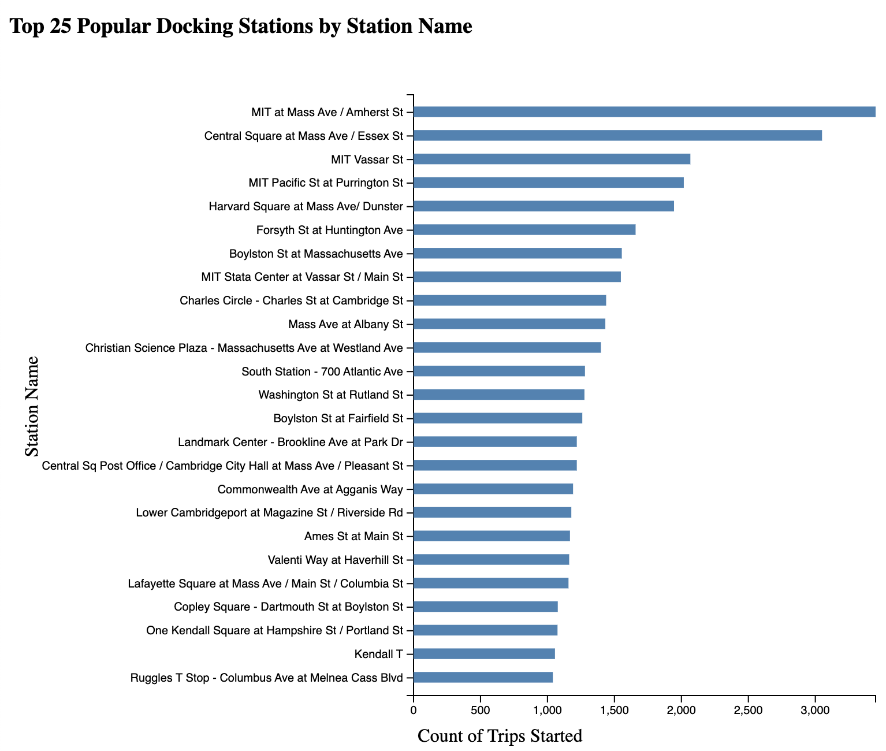

Can BlueBike Data Reveal Inefficencies?
Overall Introduction
Understanding the US unemployment rate is crucial for assessing
the health of the economy and the well-being of its citizens.
The unemployment rate represents the percentage of people in
labor force who are actively seeking employment but are unable
to find jobs. This metric serves as a key indicator of economic
performance, reflecting the availability of job opportunities
and the overall level of economic activity.
Monitoring the unemployment rate provides insights into
various aspects of the economy, such as consumer spending,
business confidence, and government policies' effectiveness.
A high unemployment rate may indicate economic downturns,
leading to decreased consumer spending, reduced business
investments, and potential social unrest. Conversely,
a low unemployment rate signifies a robust economy with
ample job opportunities, contributing to higher consumer
confidence and economic growth.
Several social factors are closely related to the unemployment
rate. Persistent unemployment can lead to financial hardships,
increased poverty rates, and reduced access to essential
services, such as healthcare and education. Moreover,
unemployment may exacerbate existing social inequalities,
disproportionately affecting marginalized communities,
including minorities, youth, and individuals with lower
educational attainment.
To learn more about the US unemployment rate and its implications,
you can visit the Bureau of Labor Statistics website or explore
analysis reports from reputable research organizations like
Pew Research Center.
Introduction to the data
Our analysis makes use of two datasets. the first data is
a data set called `us_statewide_crime.csv` which contains
the following crime statistics for all US states and the
District of Columbia in 2010. The data has 50 rows with 9
features. The detail information about the features are listed
in the following table:
| Variable Name |
Details |
| State |
State name |
| Violent_Crime |
Violent crime rate (per 100,000 residents) |
| Murder_Rate |
Murder rate (per 100,000 residents) |
| Poverty |
Percent of residents below the poverty rate |
| High_School |
Percent of residents with a high school degree |
| College |
Percent of residents with a four-year college degree |
| Single_Parent |
Percent of children living in single parent families |
| Unemployed |
Unemployment rate |
| Metropolitan |
Percent of residents living in a metropolitan area |
Meanwhile, we also believe that the geographical
information is important when evaluating the unemployment
rate. Therefore, we also make use of geographical information
on Natural Earth.
The website provides the geographical information for making maps for US states.
To make a better data visualization, we remove the Alaska and Hawaii
from the data. Following is an interactive map for the
lower 48 states in US. User can zoom in the map. The color
indicates the unemployment rate for each state. When click any
state, other social factors will be revealed for the state.
In general, west coast states tend to have higher
unemployment rate. On the east coast, West virginia
and New York state tend to have higher unemplyment rate
than the others. In the south, Mississippi and Louisiana
are the ones with the much higher unemplyment rate.
Understanding Popular BlueBike Routes
Once we collected and pre-processed our data, our group decided to make a static Sankey visualization to get
a better understanding of popular BlueBike routes. We picked Sankey because a viewer can easily discern the
two stations that the visualized routes run between. In addition, each connection looks like a route, with
the start station, end station, and a thickness of the connection determining the popularity. We can see
from this diagram that the most popular BlueBike route is between Central Square at Mass Ave/Essex St, and
MIT at Mass Ave/Amherst St. The second most popular route is between MIT Stata Center at Vassar St/Main St
and MIT Vassar St. The third most popular route is between Central Square at Mass Ave/Essex St and MIT
Pacific St at Purrington St. We can now follow the logic and hypothesis that we initially set out on: the
MBTA transit around these popular routes should be investigated and possibly improved, because we determine
from this Sankey diagram that these are areas with high BlueBike usage, and therefore possibly less transit
usage.
Looking at Popular BlueBike Docking Stations
The bar chart visualizes the most popular BlueBike Stations based on the total number of trips started within
the time frame. The chart illustrates that the station with the most trips started was at MIT at Mass Ave/
Amherst Street. Both this station as well as the second most popular station (Central Square at Mass Ave/
Essex St) both have over 3000 trips started at these locations. The five most popular BlueBike stations have
over 2,000 trips started. After the initial five stations there is a gradual decline in trips started with
the final station in the visualization representing 1,000 trips started. Understanding which docking
stations have the highest count of trips initiated gives us an understanding of potential areas the MBTA can
improve its overall efficiency.

We have also create an interactive scatter plot so that
our users can select a couple of states within
a certain range of unemployment rate and to see how the
other factors may be related here.
Compare MA to the other states
Since we are in MA, thus we want to take a closer look between
MA and other states. We create the following interactive plot
such that user can choose another state to compare with MA and
show the bar plot on each factors.
Summary and additional work
In this visualization analysis, we try to explore the US
unemployment rate across states. We also examine the relation
between unemployment rate and other social factors.
Unfortunately, this is the 2010 data thus may be different
than the current economics status. Also, unemployment rate
may fluctuate seasonally thus adding a time series analysis
will be more informative.
If you are interested in the project and want to share more
opinions or resource about the project, please contact:
Xiaoyi Yang (xiaoy.yang@northeastern.edu)